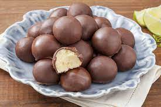

Ingredientes:
-1 xícara (chá) de leite
-3 unidades de gema de ovo
-1/2 colher (sopa) de margarina
-2 pacotes de coco ralado
-Para Banhar
-250 gr de chocolate ao leite fracionado (para a cobertura)
Modo de preparo
1.Leve o leite, o açúcar e a margarina ao fogo baixo, mexendo sem parar, até que a manteiga derreta.
2.Retire do fogo e deixe esfriar um pouco.
3.Adicione as gemas batidas e o coco.
4.Leve novamente ao fogo, mexendo até engrossar e soltar do fundo da panela.
5.Deixe esfriar por completo.
6.Unte as mãos com manteiga e faça bolinhas.
7.Deixe descansar por 2 horas na geladeira antes de banhar no chocolate.
Pra Banhar
1.Para trabalhar com o chocolate nobre é fundamental a temperagem, que nada mais é que um choque térmico que damos no chocolate, fazendo com que ele cristalize de forma correta, fique brilhoso depois de endurecer e não derreta com facilidade nos dedos. Esse processo é trabalhoso, mas é muito importante.
2.Se você não fizer a temperagem seu chocolate vai ficar sem brilho, manchado, e só de tocar vai marcar suas digitais, além de não se manter firme fora da geladeira.
3.Confira agora como fazer esse processo corretamente
4.Pique o chocolate em parte iguais para que derreta de forma uniforme. Mas separe 1/3 do chocolate para a temperarem.
5. Leve para o micro-ondas por 30 segundos e misture. Se for necessário coloque mais 30 segundos e misture bem até ficar tudo derretido.
6.Assim que seu chocolate estiver derretido, junte o 1/3 de chocolate que você reservou (pique bem, assim eles vão derreter mais rapidamente).
7.Misture até que todo o chocolate tenha sido derretido e a temperatura tenha baixado.
8.Para testar a temperatura, basta colocar um pouco de chocolate nos lábio inferior e se ele estiver frio seu chocolate esta no ponto ideal.